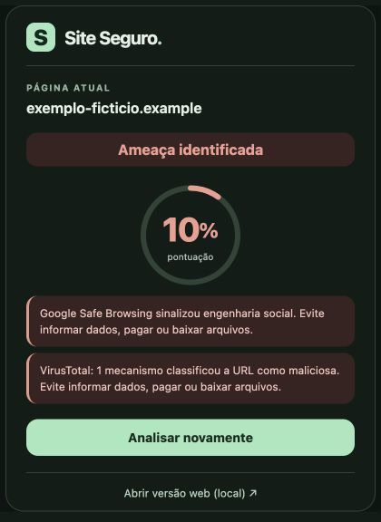

Site Seguro — extensão 1.3.2 e web 0.10.1
Atualizar
- Extraia o ZIP em uma pasta nova.
- Pare o servidor antigo com Control+C e abra INICIAR-MAC.command do novo pacote. Mantenha o Terminal aberto.
- Copie o conteúdo da nova pasta extensao para a pasta da extensão já carregada no Chrome, substituindo os arquivos.
- Abra
chrome://extensions, clique em Recarregar no cartão Site Seguro e confira a versão 1.3.2. - Feche e reabra a extensão em um site público e clique em Analisar site.
Se definiu as chaves no Terminal do VS Code, abra a nova pasta no VS Code e inicie o servidor no mesmo terminal com python3 backend/app.py.
Primeira instalação
Inicie o servidor; em chrome://extensions ative o Modo do desenvolvedor, escolha Carregar sem compactação e selecione a pasta extensao. O site completo está em http://127.0.0.1:8765/.
O painel tem cantos mais suaves e o ícone usa a mesma marca “S” verde da interface. O cálculo da pontuação permanece igual.
Prévia
Dados simulados: uma ameaça relevante limita a pontuação e produz alerta vermelho com a fonte e o motivo.

Consulte LEIA-ME.md para configuração das chaves, privacidade e limitações.